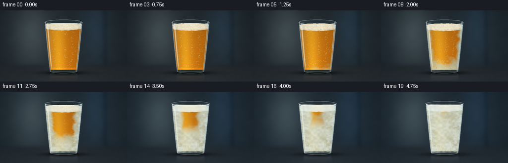
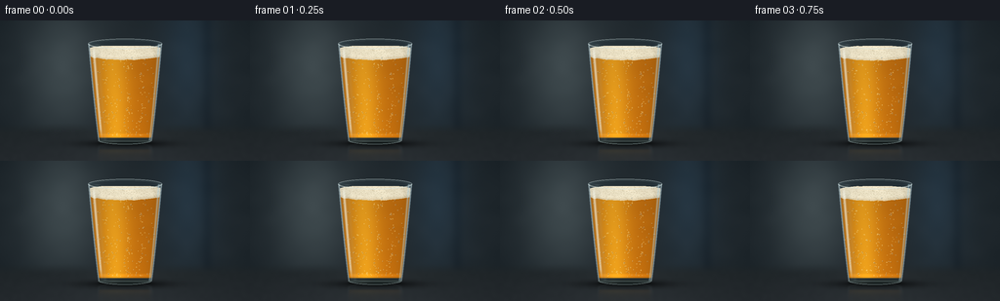

CODING AGENTS AS PIXEL WORLD MODELS
traex/GPT-6.1-Sol · phygen_095
点击播放 · 原生 RGB 像素
逐轮保存的候选
回放视频、检查图与代码变化。
每份候选均可单独播放。实际图片检查记录在下方工具轨迹中。
候选 01播放与检查图
点击播放 · 原生 RGB 像素


展开代码变化
--- 上一保存版本
+++ 本次保存版本
@@ -0,0 +1,345 @@
+"""A procedural macro timelapse: beer freezes in a chilled pint glass.
+Only numpy and Pillow are used, with analytic shading and persistent crystals.
+"""
+from pathlib import Path
+import math
+import numpy as np
+from PIL import Image, ImageDraw, ImageFilter
+import artifact_io
+
+ROOT = Path(__file__).resolve().parent
+W, H, S = 256, 144, 3
+WW, HH = W*S, H*S
+rng = np.random.default_rng(95)
+y, x = np.mgrid[0:HH, 0:WW].astype(np.float32) / S
+cx = 128.0
+
+def smooth(a, b, z):
+ q = np.clip((z-a)/(b-a), 0, 1)
+ return q*q*(3-2*q)
+
+def noise_grid(w, h):
+ v = rng.random((h,w)).astype(np.float32)
+ im = Image.fromarray(v, mode='F').resize((WW,HH),Image.Resampling.BICUBIC)
+ return np.asarray(im)
+
+coarse = noise_grid(18, 13)
+medium = noise_grid(60, 40)
+fine = rng.random((HH, WW)).astype(np.float32)
+cloud = .55*coarse + .30*medium + .15*fine
+
+def radius(yy):
+ k = np.clip((123-yy)/99, 0, 1)
+ return 27.4 + 10.6*k**.87
+
+r = radius(y)
+u = (x-cx)/r
+root = np.sqrt(np.maximum(0, 1-u*u))
+body = (y>=24)&(y<=123)&(np.abs(u)<=1)
+bottom = ((x-cx)/27.4)**2+((y-123)/4.2)**2 <= 1
+top = ((x-cx)/38)**2+((y-24)/5.3)**2 <= 1
+glass_mask = body | bottom | top
+inside = (np.abs(x-cx)<r-1.3)&(y>=26)&(y<121.0)
+
+# The scene has broad, out-of-focus sources rather than graphic outlines.
+vignette = ((x-127)/185)**2 + ((y-67)/130)**2
+base = np.empty((HH,WW,3), np.float32)
+for c, v in enumerate([35,43,48]):
+ base[:,:,c] = v - 12*vignette
+left_light = np.exp(-((x-64)/38)**2-((y-47)/67)**2)
+right_light = np.exp(-((x-192)/27)**2-((y-36)/75)**2)
+base += left_light[...,None]*np.array([29,32,31])
+base += right_light[...,None]*np.array([4,12,19])
+# Diffuse refrigerator wall, with a single barely resolved vertical recess.
+base -= (np.exp(-((x-212)/5.5)**2)*.75)[...,None]*np.array([7,7,6])
+base += (coarse-.5)[...,None]*2.5
+floor = smooth(104,117,y)
+floor_color = np.stack([30+0.15*(y-115),36+.12*(y-115),39+.15*(y-115)],axis=-1)
+floor_color += np.exp(-((x-124)/88)**2)[...,None]*8
+floor_color += (medium-.5)[...,None]*1.4
+base = base*(1-floor[...,None])+floor_color*floor[...,None]
+# Diffuse grounded shadow, baked into the stationary backdrop.
+shadow = np.exp(-((x-129)/42)**2-((y-126.4)/3.8)**2)
+base *= (1-.72*shadow[...,None])
+contact = np.exp(-((x-128)/25)**4-((y-125.8)/.8)**2)
+base *= 1-.7*contact[...,None]
+
+# Deterministic condensation drops and rising carbonation trajectories.
+drops=[]
+for _ in range(115):
+ yy=rng.uniform(37,120)
+ xx=cx+rng.uniform(-.96,.96)*radius(yy)
+ rr=rng.uniform(.23,.92)
+ if rng.random()<.1: rr*=1.4
+ drops.append((xx,yy,rr,rng.uniform(.7,1.45),rng.uniform(0,.25)))
+bubbles=[]
+for i in range(105):
+ lane=rng.choice([-.62,-.29,.1,.56])
+ bubbles.append((lane+rng.normal(0,.07),rng.uniform(0,1),rng.uniform(.2,.60),rng.uniform(5,12)))
+
+# Persistent dendritic fern-shaped frost, each rooted against the colder walls.
+ferns=[]
+for i in range(155):
+ side=1 if rng.random()>.5 else -1
+ yy=rng.uniform(34,121)
+ xx=cx+side*(radius(yy)-rng.uniform(0,8))
+ if i<35:
+ yy=rng.uniform(112,122)
+ xx=cx+rng.uniform(-23,23)
+ angle=-math.pi/2+rng.uniform(-.6,.6)
+ else:
+ angle=(math.pi if side==1 else 0)+rng.uniform(-.85,.85)
+ length=rng.uniform(3.3,14)
+ onset=.27+rng.uniform(0,.45)+(.1 if abs(xx-cx)<15 else 0)
+ pts=[]
+ # Side needles off a delicately curved main shaft.
+ for k in range(1,8):
+ along=k/9
+ sx=xx+math.cos(angle)*length*along
+ sy=yy+math.sin(angle)*length*along
+ for sign in [-1,1]:
+ aa=angle+sign*rng.uniform(.55,1.0)
+ ll=length*(1-along)*rng.uniform(.24,.53)
+ ex=sx+math.cos(aa)*ll
+ ey=sy+math.sin(aa)*ll
+ pts.append((along,(sx,sy),(ex,ey),ll))
+ ferns.append((xx,yy,angle,length,onset,pts,rng.uniform(.65,1)))
+
+# Fine facets within the beer (not ice cubes): needles appear at their local freeze front.
+facets=[]
+for _ in range(650):
+ yy=rng.uniform(42,119)
+ xx=cx+rng.uniform(-.95,.95)*(radius(yy)-2)
+ length=rng.uniform(.6,3.7)
+ aa=rng.uniform(0,math.pi)
+ edge=1-abs((xx-cx)/radius(yy))
+ arrival=.22+.70*min(edge*1.12,(120-yy)/80)
+ facets.append((xx,yy,length,aa,arrival+rng.uniform(-.05,.1),rng.uniform(.35,1)))
+
+# Foam pores remain fixed; their contrast diminishes as the foam freezes.
+pores=[]
+for _ in range(740):
+ xx=rng.uniform(92,164)
+ yy=rng.uniform(24,42)
+ rr=rng.uniform(.10,.54)
+ pores.append((xx,yy,rr,rng.random()))
+
+
+def composite(a, color, mask):
+ m=np.clip(mask,0,1).astype(np.float32)[...,None]
+ a[:]=a*(1-m)+np.asarray(color,dtype=np.float32)*m
+
+
+def pil_layer():
+ im=Image.new('RGBA',(WW,HH),(0,0,0,0))
+ return im,ImageDraw.Draw(im)
+
+
+def line(draw,p,q,color,width=.22):
+ draw.line((p[0]*S,p[1]*S,q[0]*S,q[1]*S),fill=color,width=max(1,round(width*S)))
+
+
+def ellipse(draw, box, fill=None, outline=None, width=.3):
+ draw.ellipse(tuple(v*S for v in box),fill=fill,outline=outline,width=max(1,round(width*S)))
+
+
+def overlay(a, layer, extra_mask=None):
+ v=np.asarray(layer).astype(np.float32)
+ alpha=v[:,:,3]/255
+ if extra_mask is not None: alpha*=extra_mask
+ composite(a,v[:,:,:3],alpha)
+
+
+def frame(t):
+ chill=smooth(.12,.87,t)
+ a=base.copy()
+ a += chill*np.array([-2,1.2,5])
+ # Refraction pulls broad environmental shapes through the bowed glass.
+ sample_x=np.clip((cx+(x-cx)*.68)*S,0,WW-1).astype(int)
+ ref=base[np.arange(HH)[:,None],sample_x]
+ shell=ref*.78+np.array([9,14,16])
+ shell+=np.power(np.clip(abs(u),0,1),8)[...,None]*np.array([19,24,25])
+ composite(a,shell,glass_mask)
+
+ # Static rim back edge: subtly visible behind the head of foam.
+ lip,d=pil_layer()
+ ellipse(d,(90,18.7,166,29.1),outline=(168,183,184,165),width=.65)
+ ellipse(d,(91.4,20.0,164.6,28.5),outline=(59,73,77,200),width=.5)
+ overlay(a,lip)
+
+ foam_shift=1.2*smooth(0,.3,t)-1.7*smooth(.5,1,t)
+ foam_top=29+foam_shift-4.0*root + (medium-.5)*.5
+ foam_bottom=35.8+foam_shift+4.5*root + (medium-.5)*.75
+ beer_mask=inside&(y>=foam_bottom)&(y<120.5)
+
+ # Amber absorption, glancing dark edges and a warm broad transmission source.
+ radial=np.clip(1-u*u,0,1)
+ angular=.66+.34*radial**.2
+ bright=np.exp(-((u+.35)/.46)**2)
+ vert=.92+.1*(y-40)/80
+ beer=np.empty_like(a)
+ beer[:,:,0]=(198+40*bright)*angular*vert
+ beer[:,:,1]=(113+48*bright)*angular*vert
+ beer[:,:,2]=(15+13*bright)*angular
+ beer+=(coarse-.5)[...,None]*np.array([4,3,1])
+ beer += np.exp(-((y-117.5)/1.4)**2)[...,None]*np.array([25,16,3])
+
+ # Ice nucleates at the walls and bottom, progressively closing on the center.
+ dist=np.minimum((1-np.abs(u))*1.13,np.maximum(0,(120-y)/80))
+ arrival=.22+.70*np.clip(dist,0,1)+(coarse-.5)*.16+(medium-.5)*.065
+ frozen=smooth(-.04,.17,t-arrival)*beer_mask
+ slurry=(frozen**.82)
+ icy=np.zeros_like(a)
+ icy[:,:,0]=188+21*bright+(cloud-.5)*30
+ icy[:,:,1]=194+16*bright+(cloud-.5)*31
+ icy[:,:,2]=167+10*bright+(cloud-.5)*29
+ icy*= (.80+.20*radial**.25)[...,None]
+ # At the center a little unfrozen golden liquid survives until the last stage.
+ beer=beer*(1-.86*slurry[...,None])+icy*(.86*slurry[...,None])
+ beer += (fine-.5)[...,None]*(.8+4*slurry[...,None])
+ composite(a,beer,beer_mask)
+
+ # Tiny sparkling gas bubbles, then trapped bubbles as the liquid turns to slush.
+ bub,d=pil_layer()
+ for bu,phase,rr,speed in bubbles:
+ move=min(t,.57)*speed*5
+ yy=119-((phase*78+move)%78)
+ xx=cx+bu*(radius(yy)-3)+.35*math.sin(yy*.15+t*4)
+ alpha=int((1-.85*smooth(.25,.85,t))*105)
+ ellipse(d,(xx-rr,yy-rr,xx+rr,yy+rr),outline=(255,221,136,alpha),width=.16)
+ ellipse(d,(xx-rr*.35,yy-rr*.75,xx+rr*.2,yy-rr*.25),fill=(255,247,186,min(175,alpha+30)))
+ overlay(a,bub,beer_mask)
+
+ # Crystalline internal flakes, with a modest contrast so the liquid looks frozen, not painted.
+ shards,d=pil_layer()
+ for xx,yy,ll,aa,on,shade in facets:
+ p=float(smooth(0,.18,t-on))
+ if p<=0: continue
+ dd=ll*p
+ dx=math.cos(aa)*dd/2; dy=math.sin(aa)*dd/2
+ alpha=int(p*shade*95)
+ line(d,(xx-dx,yy-dy),(xx+dx,yy+dy),(247,250,219,alpha),.22)
+ if ll>2.4:
+ line(d,(xx-dx+.3,yy-dy+.25),(xx+dx+.3,yy+dy+.25),(118,146,142,int(alpha*.36)),.18)
+ overlay(a,shards,beer_mask)
+
+ foam_mask=inside&(y>=foam_top)&(y<foam_bottom)
+ foam_freeze=smooth(.28,.83,t)
+ foam=np.empty_like(a)
+ face=.85+.15*root
+ texture=(medium-.5)*14+(fine-.5)*7
+ for c, val in enumerate([241,231,203]):
+ foam[:,:,c]=val*face+texture
+ foam=foam*(1-.6*foam_freeze)+np.array([230,237,228])*.6*foam_freeze
+ # Lower edge of the foam remains honey-coloured before freezing.
+ foam-=np.exp(-((y-foam_bottom+1)/1.2)**2)[...,None]*np.array([13,20,27])*(1-.65*foam_freeze)
+ composite(a,foam,foam_mask)
+ pore,d=pil_layer()
+ for xx,yy,rr,shade in pores:
+ yy+=foam_shift
+ contrast=1-.66*foam_freeze
+ ellipse(d,(xx-rr,yy-rr*.7,xx+rr,yy+rr*.7),outline=(137,120,81,int((32+shade*40)*contrast)),width=.15)
+ if rr>.34:
+ ellipse(d,(xx-rr*.55,yy-rr*.65,xx+rr*.35,yy-rr*.15),fill=(255,253,228,int(95*contrast)))
+ overlay(a,pore,foam_mask)
+
+ # The heavy heel of the pint is transparent glass, with caustics along its arc.
+ heel=(y>120)&glass_mask
+ hcol=ref*.70+np.array([12,18,17])
+ hcol+=np.exp(-((y-123.8)/1.0)**2)[...,None]*np.array([40,44,41])
+ hcol+=np.exp(-((u+.45)/.22)**2)[...,None]*np.array([10,10,9])
+ composite(a,hcol,heel*.70)
+
+ # Front wall reflections, long and soft rather than flat vector strokes.
+ edge=np.exp(-((np.abs(u)-.98)/.025)**2)*body
+ left=np.exp(-((u+.86)/.038)**2)*body*smooth(25,36,y)*(1-smooth(108,124,y))
+ left_soft=np.exp(-((u+.75)/.07)**2)*body
+ right=np.exp(-((u-.91)/.027)**2)*body
+ composite(a,np.array([209,227,231]),edge*.5)
+ composite(a,np.array([250,253,242]),left*.63)
+ composite(a,np.array([201,218,214]),left_soft*.095)
+ composite(a,np.array([182,218,233]),right*.49)
+
+ # Water beads at first; later each bead is swallowed by a veil of hoarfrost.
+ bead,d=pil_layer()
+ for xx,yy,rr,ratio,on in drops:
+ growth=.58+.42*float(smooth(0,.32,t-on))
+ freeze_drop=float(smooth(.3,.75,t))
+ opacity=(.8+.2*growth)*(1-.78*freeze_drop)
+ rr*=growth
+ ellipse(d,(xx-rr+.2,yy-rr*ratio+.2,xx+rr+.2,yy+rr*ratio+.2),fill=(19,40,44,int(65*opacity)))
+ ellipse(d,(xx-rr,yy-rr*ratio,xx+rr,yy+rr*ratio),outline=(228,240,231,int(88*opacity)),width=.22)
+ line(d,(xx-rr*.55,yy-rr*ratio*.45),(xx-rr*.1,yy-rr*ratio*.8),(255,255,242,int(145*opacity)),.23)
+ overlay(a,bead,inside)
+
+ # Powdery frost has a spatially coherent advancing edge, not a global dissolve.
+ frost_start=.33+.58*np.clip(1-np.abs(u),0,1)+.15*(coarse-.5)
+ frost_start=np.minimum(frost_start,.35+.60*np.maximum(0,(122-y)/90))
+ frost=smooth(-.015,.23,t-frost_start)*body
+ frost*= .28+.58*np.clip((cloud-.3)*1.3,0,1)
+ frost_color=np.stack([211+(medium-.5)*26,226+(medium-.5)*23,228+(medium-.5)*20],axis=-1)
+ composite(a,frost_color,frost*.79)
+ # Thousands of sub-pixel crystals lend frost its matte granular highlights.
+ sparkle=smooth(.69,.94,fine)*frost*.35
+ composite(a,np.array([241,251,249]),sparkle)
+
+ fern,d=pil_layer()
+ for xx,yy,aa,ll,on,branches,shade in ferns:
+ p=float(smooth(0,.32,t-on))
+ if p<=0: continue
+ alpha=int(148*p*shade)
+ ex=xx+math.cos(aa)*ll*p; ey=yy+math.sin(aa)*ll*p
+ line(d,(xx,yy),(ex,ey),(235,247,245,alpha),.26)
+ for along,st,en,bl in branches:
+ bp=np.clip((p-along)/(1-along),0,1)
+ if bp<=0: continue
+ end=(st[0]+(en[0]-st[0])*bp,st[1]+(en[1]-st[1])*bp)
+ line(d,st,end,(226,243,245,int(alpha*.78)),.18)
+ # Secondary fingers make feathery ice instead of generic snowflake symbols.
+ if bl>1.7 and bp>.65:
+ mid=((st[0]+end[0])*.5,(st[1]+end[1])*.5)
+ aa2=math.atan2(end[1]-st[1],end[0]-st[0])+.55
+ tip=(mid[0]+math.cos(aa2)*bl*.25,mid[1]+math.sin(aa2)*bl*.25)
+ line(d,mid,tip,(245,253,249,int(alpha*.58)),.17)
+ overlay(a,fern,body)
+
+ # The open rim stays recognizable throughout, accumulating fine white rime.
+ front,d=pil_layer()
+ d.arc((90*S,18.7*S,166*S,29.1*S),0,180,fill=(210,227,228,175),width=2)
+ d.arc((91.4*S,20.0*S,164.6*S,28.5*S),0,180,fill=(254,251,227,133),width=1)
+ d.arc((100.6*S,118.8*S,155.4*S,127*S),0,180,fill=(164,183,182,155),width=2)
+ if t>.34:
+ f=float(smooth(.34,.95,t))
+ d.arc((90*S,18.7*S,166*S,29.1*S),3,178,fill=(235,248,249,int(180*f)),width=2)
+ for j in range(70):
+ angle=(j/69)*math.pi
+ xx=128+37.9*math.cos(angle)
+ yy=24+5.2*math.sin(angle)
+ if (j%7)/7>f: continue
+ line(d,(xx,yy),(xx-.35,yy-.7*f),(242,252,248,int(180*f)),.22)
+ overlay(a,front)
+
+ # Soft, attenuated reflection below the resting glass.
+ cut=Image.fromarray(np.uint8(np.clip(a,0,255))).crop((int(85*S),int(108*S),int(171*S),int(126*S)))
+ cut=cut.transpose(Image.Transpose.FLIP_TOP_BOTTOM).filter(ImageFilter.GaussianBlur(.75*S))
+ vv=np.asarray(cut).astype(np.float32)
+ for j in range(min(vv.shape[0],HH-int(127*S))):
+ yy=int(127*S)+j
+ strength=.19*math.exp(-j/(6*S))
+ a[yy,int(85*S):int(171*S)]=a[yy,int(85*S):int(171*S)]*(1-strength)+vv[j]*strength
+ # A localized dusting of ice at the cold foot of the glass.
+ frostfoot=np.exp(-((x-128)/34)**4-((y-126.3)/1.6)**2)*smooth(.5,1,t)
+ composite(a,np.array([192,215,222]),frostfoot*.12*(.2+.8*fine))
+ # Film-like, fixed fine grain and restrained tonality.
+ a+=(fine-.5)[...,None]*1.0
+ im=Image.fromarray(np.uint8(np.clip(a,0,255)))
+ return np.asarray(im.resize((W,H),Image.Resampling.LANCZOS).convert('RGB'))
+
+
+def main():
+ frames=np.stack([frame(i/19) for i in range(20)])
+ artifact_io.save(frames,ROOT)
+ print('Saved',frames.shape,frames.dtype,'to',ROOT)
+
+if __name__=='__main__':
+ main()
可观测工具轨迹
实际执行的命令与返回图片。
命令 1exit 0
/bin/bash -lc 'ls -la && cat prompt.txt && cat GENERATION_RULES.md && cat task_spec.json'
命令 2exit 0
/bin/bash -lc "cat artifact_io.py && cat player_template.html && python - <<'PY'
import numpy,PIL
print('numpy/PIL available')
PY"命令 3exit 1
/bin/bash -lc "cat > generate.py <<'PY'
\"\"\"A procedural macro timelapse: beer freezes in a chilled pint glass.
Only numpy and Pillow are used, with analytic shading and persistent crystals.
\"\"\"
from pathlib import Path
import math
import numpy as np
from PIL import Image, ImageDraw, ImageFilter
import artifact_io
ROOT = Path(__file__).resolve().parent
W, H, S = 256, 144, 3
WW, HH = W*S, H*S
rng = np.random.default_rng(095)
y, x = np.mgrid[0:HH, 0:WW].astype(np.float32) / S
cx = 128.0
def smooth(a, b, z):
q = np.clip((z-a)/(b-a), 0, 1)
return q*q*(3-2*q)
def noise_grid(w, h):
v = rng.random((h,w)).astype(np.float32)
im = Image.fromarray(v, mode='F').resize((WW,HH),Image.Resampling.BICUBIC)
return np.asarray(im)
coarse = noise_grid(18, 13)
medium = noise_grid(60, 40)
fine = rng.random((HH, WW)).astype(np.float32)
cloud = .55*coarse + .30*medium + .15*fine
def radius(yy):
k = np.clip((123-yy)/99, 0, 1)
return 27.4 + 10.6*k**.87
r = radius(y)
u = (x-cx)/r
root = np.sqrt(np.maximum(0, 1-u*u))
body = (y>=24)&(y<=123)&(np.abs(u)<=1)
bottom = ((x-cx)/27.4)**2+((y-123)/4.2)**2 <= 1
top = ((x-cx)/38)**2+((y-24)/5.3)**2 <= 1
glass_mask = body | bottom | top
inside = (np.abs(x-cx)<r-1.3)&(y>=26)&(y<121.0)
# The scene has broad, out-of-focus sources rather than graphic outlines.
vignette = ((x-127)/185)**2 + ((y-67)/130)**2
base = np.empty((HH,WW,3), np.float32)
for c, v in enumerate([35,43,48]):
base[:,:,c] = v - 12*vignette
left_light = np.exp(-((x-64)/38)**2-((y-47)/67)**2)
right_light = np.exp(-((x-192)/27)**2-((y-36)/75)**2)
base += left_light[...,None]*np.array([29,32,31])
base += right_light[...,None]*np.array([4,12,19])
# Diffuse refrigerator wall, with a single barely resolved vertical recess.
base -= (np.exp(-((x-212)/5.5)**2)*.75)[...,None]*np.array([7,7,6])
base += (coarse-.5)[...,None]*2.5
floor = smooth(104,117,y)
floor_color = np.stack([30+0.15*(y-115),36+.12*(y-115),39+.15*(y-115)],axis=-1)
floor_color += np.exp(-((x-124)/88)**2)[...,None]*8
floor_color += (medium-.5)[...,None]*1.4
base = base*(1-floor[...,None])+floor_color*floor[...,None]
# Diffuse grounded shadow, baked into the stationary backdrop.
shadow = np.exp(-((x-129)/42)**2-((y-126.4)/3.8)**2)
base *= (1-.72*shadow[...,None])
contact = np.exp(-((x-128)/25)**4-((y-125.8)/.8)**2)
base *= 1-.7*contact[...,None]
# Deterministic condensation drops and rising carbonation trajectories.
drops=[]
for _ in range(115):
yy=rng.uniform(37,120)
xx=cx+rng.uniform(-.96,.96)*radius(yy)
rr=rng.uniform(.23,.92)
if rng.random()<.1: rr*=1.4
drops.append((xx,yy,rr,rng.uniform(.7,1.45),rng.uniform(0,.25)))
bubbles=[]
for i in range(105):
lane=rng.choice([-.62,-.29,.1,.56])
bubbles.append((lane+rng.normal(0,.07),rng.uniform(0,1),rng.uniform(.2,.60),rng.uniform(5,12)))
# Persistent dendritic fern-shaped frost, each rooted against the colder walls.
ferns=[]
for i in range(155):
side=1 if rng.random()>.5 else -1
yy=rng.uniform(34,121)
xx=cx+side*(radius(yy)-rng.uniform(0,8))
if i<35:
yy=rng.uniform(112,122)
xx=cx+rng.uniform(-23,23)
angle=-math.pi/2+rng.uniform(-.6,.6)
else:
angle=(math.pi if side==1 else 0)+rng.uniform(-.85,.85)
length=rng.uniform(3.3,14)
onset=.27+rng.uniform(0,.45)+(.1 if abs(xx-cx)<15 else 0)
pts=[]
# Side needles off a delicately curved main shaft.
for k in range(1,8):
along=k/9
sx=xx+math.cos(angle)*length*along
sy=yy+math.sin(angle)*length*along
for sign in [-1,1]:
aa=angle+sign*rng.uniform(.55,1.0)
ll=length*(1-along)*rng.uniform(.24,.53)
ex=sx+math.cos(aa)*ll
ey=sy+math.sin(aa)*ll
pts.append((along,(sx,sy),(ex,ey),ll))
ferns.append((xx,yy,angle,length,onset,pts,rng.uniform(.65,1)))
# Fine facets within the beer (not ice cubes): needles appear at their local freeze front.
facets=[]
for _ in range(650):
yy=rng.uniform(42,119)
xx=cx+rng.uniform(-.95,.95)*(radius(yy)-2)
length=rng.uniform(.6,3.7)
aa=rng.uniform(0,math.pi)
edge=1-abs((xx-cx)/radius(yy))
arrival=.22+.70*min(edge*1.12,(120-yy)/80)
facets.append((xx,yy,length,aa,arrival+rng.uniform(-.05,.1),rng.uniform(.35,1)))
# Foam pores remain fixed; their contrast diminishes as the foam freezes.
pores=[]
for _ in range(740):
xx=rng.uniform(92,164)
yy=rng.uniform(24,42)
rr=rng.uniform(.10,.54)
pores.append((xx,yy,rr,rng.random()))
def composite(a, color, mask):
m=np.clip(mask,0,1).astype(np.float32)[...,None]
a[:]=a*(1-m)+np.asarray(color,dtype=np.float32)*m
def pil_layer():
im=Image.new('RGBA',(WW,HH),(0,0,0,0))
return im,ImageDraw.Draw(im)
def line(draw,p,q,color,width=.22):
draw.line((p[0]*S,p[1]*S,q[0]*S,q[1]*S),fill=color,width=max(1,round(width*S)))
def ellipse(draw, box, fill=None, outline=None, width=.3):
draw.ellipse(tuple(v*S for v in box),fill=fill,outline=outline,width=max(1,round(width*S)))
def overlay(a, layer, extra_mask=None):
v=np.asarray(layer).astype(np.float32)
alpha=v[:,:,3]/255
if extra_mask is not None: alpha*=extra_mask
composite(a,v[:,:,:3],alpha)
def frame(t):
chill=smooth(.12,.87,t)
a=base.copy()
a += chill*np.array([-2,1.2,5])
# Refraction pulls broad environmental shapes through the bowed glass.
sample_x=np.clip((cx+(x-cx)*.68)*S,0,WW-1).astype(int)
ref=base[np.arange(HH)[:,None],sample_x]
shell=ref*.78+np.array([9,14,16])
shell+=np.power(np.clip(abs(u),0,1),8)[...,None]*np.array([19,24,25])
composite(a,shell,glass_mask)
# Static rim back edge: subtly visible behind the head of foam.
lip,d=pil_layer()
ellipse(d,(90,18.7,166,29.1),outline=(168,183,184,165),width=.65)
ellipse(d,(91.4,20.0,164.6,28.5),outline=(59,73,77,200),width=.5)
overlay(a,lip)
foam_shift=1.2*smooth(0,.3,t)-1.7*smooth(.5,1,t)
foam_top=29+foam_shift-4.0*root + (medium-.5)*.5
foam_bottom=35.8+foam_shift+4.5*root + (medium-.5)*.75
beer_mask=inside&(y>=foam_bottom)&(y<120.5)
# Amber absorption, glancing dark edges and a warm broad transmission source.
radial=np.clip(1-u*u,0,1)
angular=.66+.34*radial**.2
bright=np.exp(-((u+.35)/.46)**2)
vert=.92+.1*(y-40)/80
beer=np.empty_like(a)
beer[:,:,0]=(198+40*bright)*angular*vert
beer[:,:,1]=(113+48*bright)*angular*vert
beer[:,:,2]=(15+13*bright)*angular
beer+=(coarse-.5)[...,None]*np.array([4,3,1])
beer += np.exp(-((y-117.5)/1.4)**2)[...,None]*np.array([25,16,3])
# Ice nucleates at the walls and bottom, progressively closing on the center.
dist=np.minimum((1-np.abs(u))*1.13,np.maximum(0,(120-y)/80))
arrival=.22+.70*np.clip(dist,0,1)+(coarse-.5)*.16+(medium-.5)*.065
frozen=smooth(-.04,.17,t-arrival)*beer_mask
slurry=(frozen**.82)
icy=np.zeros_like(a)
icy[:,:,0]=188+21*bright+(cloud-.5)*30
icy[:,:,1]=194+16*bright+(cloud-.5)*31
icy[:,:,2]=167+10*bright+(cloud-.5)*29
icy*= (.80+.20*radial**.25)[...,None]
# At the center a little unfrozen golden liquid survives until the last stage.
beer=beer*(1-.86*slurry[...,None])+icy*(.86*slurry[...,None])
beer += (fine-.5)[...,None]*(.8+4*slurry[...,None])
composite(a,beer,beer_mask)
# Tiny sparkling gas bubbles, then trapped bubbles as the liquid turns to slush.
bub,d=pil_layer()
for bu,phase,rr,speed in bubbles:
move=min(t,.57)*speed*5
yy=119-((phase*78+move)%78)
xx=cx+bu*(radius(yy)-3)+.35*math.sin(yy*.15+t*4)
alpha=int((1-.85*smooth(.25,.85,t))*105)
ellipse(d,(xx-rr,yy-rr,xx+rr,yy+rr),outline=(255,221,136,alpha),width=.16)
ellipse(d,(xx-rr*.35,yy-rr*.75,xx+rr*.2,yy-rr*.25),fill=(255,247,186,min(175,alpha+30)))
overlay(a,bub,beer_mask)
# Crystalline internal flakes, with a modest contrast so the liquid looks frozen, not painted.
shards,d=pil_layer()
for xx,yy,ll,aa,on,shade in facets:
p=float(smooth(0,.18,t-on))
if p<=0: continue
dd=ll*p
dx=math.cos(aa)*dd/2; dy=math.sin(aa)*dd/2
alpha=int(p*shade*95)
line(d,(xx-dx,yy-dy),(xx+dx,yy+dy),(247,250,219,alpha),.22)
if ll>2.4:
line(d,(xx-dx+.3,yy-dy+.25),(xx+dx+.3,yy+dy+.25),(118,146,142,int(alpha*.36)),.18)
overlay(a,shards,beer_mask)
foam_mask=inside&(y>=foam_top)&(y<foam_bottom)
foam_freeze=smooth(.28,.83,t)
foam=np.empty_like(a)
face=.85+.15*root
texture=(medium-.5)*14+(fine-.5)*7
for c, val in enumerate([241,231,203]):
foam[:,:,c]=val*face+texture
foam=foam*(1-.6*foam_freeze)+np.array([230,237,228])*.6*foam_freeze
# Lower edge of the foam remains honey-coloured before freezing.
foam-=np.exp(-((y-foam_bottom+1)/1.2)**2)[...,None]*np.array([13,20,27])*(1-.65*foam_freeze)
composite(a,foam,foam_mask)
pore,d=pil_layer()
for xx,yy,rr,shade in pores:
yy+=foam_shift
contrast=1-.66*foam_freeze
ellipse(d,(xx-rr,yy-rr*.7,xx+rr,yy+rr*.7),outline=(137,120,81,int((32+shade*40)*contrast)),width=.15)
if rr>.34:
ellipse(d,(xx-rr*.55,yy-rr*.65,xx+rr*.35,yy-rr*.15),fill=(255,253,228,int(95*contrast)))
overlay(a,pore,foam_mask)
# The heavy heel of the pint is transparent glass, with caustics along its arc.
heel=(y>120)&glass_mask
hcol=ref*.70+np.array([12,18,17])
hcol+=np.exp(-((y-123.8)/1.0)**2)[...,None]*np.array([40,44,41])
hcol+=np.exp(-((u+.45)/.22)**2)[...,None]*np.array([10,10,9])
composite(a,hcol,heel*.70)
# Front wall reflections, long and soft rather than flat vector strokes.
edge=np.exp(-((np.abs(u)-.98)/.025)**2)*body
left=np.exp(-((u+.86)/.038)**2)*body*smooth(25,36,y)*(1-smooth(108,124,y))
left_soft=np.exp(-((u+.75)/.07)**2)*body
right=np.exp(-((u-.91)/.027)**2)*body
composite(a,np.array([209,227,231]),edge*.5)
composite(a,np.array([250,253,242]),left*.63)
composite(a,np.array([201,218,214]),left_soft*.095)
composite(a,np.array([182,218,233]),right*.49)
# Water beads at first; later each bead is swallowed by a veil of hoarfrost.
bead,d=pil_layer()
for xx,yy,rr,ratio,on in drops:
growth=.58+.42*float(smooth(0,.32,t-on))
freeze_drop=float(smooth(.3,.75,t))
opacity=(.8+.2*growth)*(1-.78*freeze_drop)
rr*=growth
ellipse(d,(xx-rr+.2,yy-rr*ratio+.2,xx+rr+.2,yy+rr*ratio+.2),fill=(19,40,44,int(65*opacity)))
ellipse(d,(xx-rr,yy-rr*ratio,xx+rr,yy+rr*ratio),outline=(228,240,231,int(88*opacity)),width=.22)
line(d,(xx-rr*.55,yy-rr*ratio*.45),(xx-rr*.1,yy-rr*ratio*.8),(255,255,242,int(145*opacity)),.23)
overlay(a,bead,inside)
# Powdery frost has a spatially coherent advancing edge, not a global dissolve.
frost_start=.33+.58*np.clip(1-np.abs(u),0,1)+.15*(coarse-.5)
frost_start=np.minimum(frost_start,.35+.60*np.maximum(0,(122-y)/90))
frost=smooth(-.015,.23,t-frost_start)*body
frost*= .28+.58*np.clip((cloud-.3)*1.3,0,1)
frost_color=np.stack([211+(medium-.5)*26,226+(medium-.5)*23,228+(medium-.5)*20],axis=-1)
composite(a,frost_color,frost*.79)
# Thousands of sub-pixel crystals lend frost its matte granular highlights.
sparkle=smooth(.69,.94,fine)*frost*.35
composite(a,np.array([241,251,249]),sparkle)
fern,d=pil_layer()
for xx,yy,aa,ll,on,branches,shade in ferns:
p=float(smooth(0,.32,t-on))
if p<=0: continue
alpha=int(148*p*shade)
ex=xx+math.cos(aa)*ll*p; ey=yy+math.sin(aa)*ll*p
line(d,(xx,yy),(ex,ey),(235,247,245,alpha),.26)
for along,st,en,bl in branches:
bp=np.clip((p-along)/(1-along),0,1)
if bp<=0: continue
end=(st[0]+(en[0]-st[0])*bp,st[1]+(en[1]-st[1])*bp)
line(d,st,end,(226,243,245,int(alpha*.78)),.18)
# Secondary fingers make feathery ice instead of generic snowflake symbols.
if bl>1.7 and bp>.65:
mid=((st[0]+end[0])*.5,(st[1]+end[1])*.5)
aa2=math.atan2(end[1]-st[1],end[0]-st[0])+.55
tip=(mid[0]+math.cos(aa2)*bl*.25,mid[1]+math.sin(aa2)*bl*.25)
line(d,mid,tip,(245,253,249,int(alpha*.58)),.17)
overlay(a,fern,body)
# The open rim stays recognizable throughout, accumulating fine white rime.
front,d=pil_layer()
d.arc((90*S,18.7*S,166*S,29.1*S),0,180,fill=(210,227,228,175),width=2)
d.arc((91.4*S,20.0*S,164.6*S,28.5*S),0,180,fill=(254,251,227,133),width=1)
d.arc((100.6*S,118.8*S,155.4*S,127*S),0,180,fill=(164,183,182,155),width=2)
if t>.34:
f=float(smooth(.34,.95,t))
d.arc((90*S,18.7*S,166*S,29.1*S),3,178,fill=(235,248,249,int(180*f)),width=2)
for j in range(70):
angle=(j/69)*math.pi
xx=128+37.9*math.cos(angle)
yy=24+5.2*math.sin(angle)
if (j%7)/7>f: continue
line(d,(xx,yy),(xx-.35,yy-.7*f),(242,252,248,int(180*f)),.22)
overlay(a,front)
# Soft, attenuated reflection below the resting glass.
cut=Image.fromarray(np.uint8(np.clip(a,0,255))).crop((int(85*S),int(108*S),int(171*S),int(126*S)))
cut=cut.transpose(Image.Transpose.FLIP_TOP_BOTTOM).filter(ImageFilter.GaussianBlur(.75*S))
vv=np.asarray(cut).astype(np.float32)
for j in range(min(vv.shape[0],HH-int(127*S))):
yy=int(127*S)+j
strength=.19*math.exp(-j/(6*S))
a[yy,int(85*S):int(171*S)]=a[yy,int(85*S):int(171*S)]*(1-strength)+vv[j]*strength
# A localized dusting of ice at the cold foot of the glass.
frostfoot=np.exp(-((x-128)/34)**4-((y-126.3)/1.6)**2)*smooth(.5,1,t)
composite(a,np.array([192,215,222]),frostfoot*.12*(.2+.8*fine))
# Film-like, fixed fine grain and restrained tonality.
a+=(fine-.5)[...,None]*1.0
im=Image.fromarray(np.uint8(np.clip(a,0,255)))
return np.asarray(im.resize((W,H),Image.Resampling.LANCZOS).convert('RGB'))
def main():
frames=np.stack([frame(i/19) for i in range(20)])
artifact_io.save(frames,ROOT)
print('Saved',frames.shape,frames.dtype,'to',ROOT)
if __name__=='__main__':
main()
PY
python generate.py"命令 4exit 0
/bin/bash -lc "sed -i 's/default_rng(095)/default_rng(95)/' generate.py python generate.py"
命令 5exit 0
/bin/bash -lc "python - <<'PY'
from pathlib import Path
import numpy as np
from PIL import Image
root=Path('.')
a=np.load('pixels.npz')['pixels']
assert a.shape == (144,256,20)
fs=sorted((root/'frames').glob('*.png'))
assert len(fs)==20
assert all(Image.open(p).size==(256,144) and Image.open(p).mode=='RGB' for p in fs)
print('Verified 20 RGB frames, 256Ã144, 4 fps; required artifacts present.')
print('Frame change:',np.mean(a[:,:,0]"'!=a[:,:,-1]))
PY
command -v ffmpeg || true
ls -lh pixels.npz index.html inspection.png generate.py'保存候选 1 份；完成命令 5 次；可验证图片返回 0 张。原始 API 响应与完整日志保留在本地。